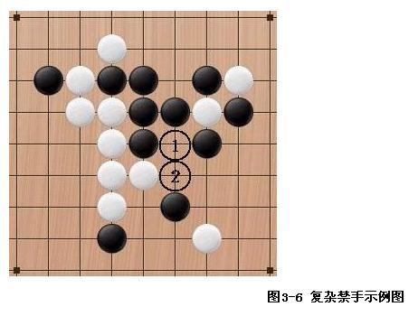

复杂禁手-“九尾龟”。请高人来指点小弟一下？
#1 复杂禁手-“九尾龟”。请高人来指点小弟一下？ 作者：丝袜伯爵 发表时间：2009-6-11 10:52:46
小弟今天第一次看到这个词，以前从来没听说过，还请各位神仙们赐教一下这个““九尾龟”的来龙去脉，越详细越好#2 Re:复杂禁手-“九尾龟”。请高人来指点小弟一下？ 作者：岳麓小棋后 发表时间：2009-6-11 10:54:26
有这个名词吗？我也来学习了。。。#3 Re:复杂禁手-“九尾龟”。请高人来指点小弟一下？ 作者：不知 发表时间：2009-6-11 11:01:19
下图就是一个“九尾龟”，请判断Z点是否为“禁手”点。

简而言之，由于假设了Z点黑子的存在，因此W为“禁手”，从而证明X不是“禁手”，推导出Y为“禁手”，最后得出结论：Z不是“禁手”。你的头一定很晕吧？如果你确实不能理解，请不要强行试图读懂它，这只是学术上的研究，对实战没有帮助。因为在实战中很难想象一方有那么多的活二，而另一方还仍然“健在”的。如果你把这个图例强行“读懂”，很可能反而会影响你对一般简单“禁手”问题的分析和认识，这就违背笔者写本文的初衷了。
(以上文字属于保留帖中的转帖.出处已经不明.请勿追究本人责任.否则冒死抵抗!)
［ 有志青年 于 2009-6-11 11:09:58 时奖励此帖[金币加 20 威望加1］
#4 Re:Re:复杂禁手-“九尾龟”。请高人来指点小弟一下？ 作者：岳麓小棋后 发表时间：2009-6-11 11:07:46
复杂禁手的判定问题：以上的那些“禁手”能被简单直观地判定出来。但在实际中会出现很多复杂的禁手。其根本原因就是出现了一种新情况----“在‘禁手’的判定中出现了其它‘禁手’”。比较有名的有“九尾龟”问题和“黑洞”问题。这两个棋局比较复杂，这里举一个简单的例子。
如图3-6所示：

在图3-6中，白棋正在成“四”叫杀，黑棋只能走（1）位解杀，但这好象正是白棋所希望的，那么（1）位是否为“禁手”呢？让我们看一下，如果黑棋走在（1）的位置上能同时形成几个“先手”？经初步观察好象有二个“先手”：一个是从左上方到右下角的“三”；另一个是纵向的“三”。倘若此说成立，黑必败无疑。现让我们分别判断这二个是否真的是“三”：第一个“三”是连续型结构的，只要能在二端下子就能成“活四”，本例中这个“三”符合这个要求，能形成“活四”，因此它是真正的“三”；第二个“三”是间断型结构的，要形成“四”就必须走中间的那点，在本例中就是（2）位，那么黑棋能下在（2）成“活四”吗？不能！因为黑棋在下（2）位使纵向的“三”成为“活四”的同时，也把从右上方到左下角的一个型变成了“四”，因此（2）是“四四”禁手点，即黑棋在此处不能下子，因此不可能在纵向形成“活四”，从而证明第二个不是真正的“三”，更不是“先手”。综上所述，在如图例中的情况下，黑棋走（1）位仅成一个“先手”，不存在“禁手”问题，（1）更不是“禁点”，黑棋可以下。
出自http://www.onlinesjtu.com/LUNWEN/files/03秋专升本优秀毕业论文/王志荣.htm#_Toc111487673
［ 有志青年 于 2009-6-11 11:10:10 时奖励此帖[金币加 20 威望加1］
#5 Re:复杂禁手-“九尾龟”。请高人来指点小弟一下？ 作者：丝袜伯爵 发表时间：2009-6-11 11:08:59
多谢不知大人，兄弟我学习了。#6 Re:复杂禁手-“九尾龟”。请高人来指点小弟一下？ 作者：丝袜伯爵 发表时间：2009-6-11 11:12:24
说实在的第一次看有点没有看懂，看起来有点晕。
同时也非常感谢-岳麓小棋后
#7 Re:复杂禁手-“九尾龟”。请高人来指点小弟一下？ 作者：萧寒寒 发表时间：2009-6-11 12:54:14
中国象棋里也有九尾龟，开局
#8 Re:复杂禁手-“九尾龟”。请高人来指点小弟一下？ 作者：我爱江俊男 发表时间：2009-6-15 5:41:02
那个九尾鱼可真的把我搞晕了，
#9 Re:Re:Re:复杂禁手-“九尾龟”。请高人来指点小弟一下？ 作者：刀魂 发表时间：2009-6-15 8:02:45
引用：
原文由 岳麓小棋后 发表于 2009-6-11 11:07:46 :
复杂禁手的判定问题：以上的那些“禁手”能被简单直观地判定出来。但在实际中会出现很多复杂的禁手。其根本原因就是出现了一种新情况----“在‘禁手’的判定中出现了其它‘禁手’”。比较有名的有“九尾龟”问题和“黑洞”问题。这两个棋局比较复杂，这里举一个简单的例子。
如图3-6所示：
在图3-6中，白棋正在成“四”叫杀，黑棋只能走（1）位解杀，但这好象正是白棋所希望的，那么（1）位是否为“禁手”呢？让我们看一下，如果黑棋走在（1）的位置上能同时形成几个“先手”？经初步观察好象有二个“先手”：一个是从左上方到右下角的“三”；另一个是纵向的“三”。倘若此说成立，黑必败无疑。现让我们分别判断这二个是否真的是“三”：第一个“三”是连续型结构的，只要能在二端下子就能成“活四”，本例中这个“三”符合这个要求，能形成“活四”，因此它是真正的“三”；第二个“三”是间断型结构的，要形成“四”就必须走中间的那点，在本例中就是（2）位，那么黑棋能下在（2）成“活四”吗？不能！因为黑棋在下（2）位使纵向的“三”成为“活四”的同时，也把从右上方到左下角的一个型变成了“四”，因此（2）是“四四”禁手点，即黑棋在此处不能下子，因此不可能在纵向形成“活四”，从而证明第二个不是真正的“三”，更不是“先手”。综上所述，在如图例中的情况下，黑棋走（1）位仅成一个“先手”，不存在“禁手”问题，（1）更不是“禁点”，黑棋可以下。
出自http://www.onlinesjtu.com/LUNWEN/files/03秋专升本优秀毕业论文/王志荣.htm#_Toc111487673
［ 有志青年 于 2009-6-11 11:10:10 时奖励此帖[金币加 20 威望加1］
写那么多干嘛，应该这样解释：解禁，44解33
#10 Re:复杂禁手-“九尾龟”。请高人来指点小弟一下？ 作者：茗弈南极的绿洲 发表时间：2009-6-15 9:38:45
学习了